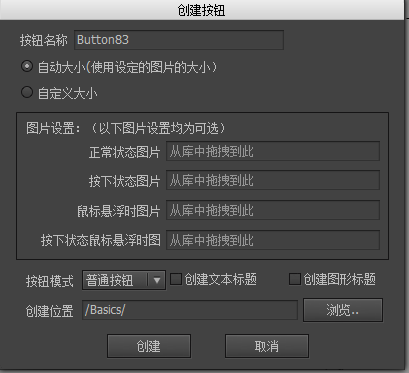

Guide

按钮
按钮是FairyGUI里最常用的扩展组件。他用于多个用途，例如传统UI框架中的RadioButton、Checkbox、List Item等，在FairyGUI里通通都是按钮。
创建按钮
可以通过两种方式创建按钮组件。
- 点击主菜单“资源”->“新建按钮”，按照向导的提示一步步完成。

- 新建一个组件，然后在组件属性里选择扩展为“按钮”。然后创建一个控制器，点击“按钮模板”，选择一个按钮模板。
设计属性
在组件编辑状态下，按钮组件的属性面板是：

模式有三种按钮模式选择。普通按钮用于点击->响应的用途，无状态。单选按钮有一个是否选中的状态。被点击后处于选中状态，再点击仍然保持选中状态。复选按钮有一个是否选中的状态。被点击后处于选中状态，再点击则变成不选中状态。
声音设置按钮被点击时的音效。如果所有按钮都共用一种音效，不需要每个按钮设置，在项目属性对话框里有一个全局的设置。音量设置按钮点击音效的播放音量。0-100。按下效果用控制器可以随意控制按钮在不同页面的形态，但出于方便，内置了几种常用的按钮按下效果。缩放按下时按钮变大或变小。按下缩放是通过改变按钮组件的ScaleX和ScaleY实现的。注意：设置了按下缩放后，按钮初始化时会自动将轴心设置为（0.5，0.5）。变暗按下时按钮呈现变暗的状态。变暗实际是通过改变按钮组件内所有图片的颜色实现的。如果你还有对按钮内图片的颜色的单独设置，这可能会发生冲突。
命名约定
button按钮控制器必须命名为“button”，如果你不需要按钮有特殊效果，那么这个控制器不是必须的。
按钮控制器各个页面的说明：
up 按钮正常的状态；down 普通按钮按下时的状态/单选或多选按钮被选中时的状态；over 当鼠标指针悬浮在按钮上方时的状态；selectedOver 当单选或多选按钮选中时，鼠标指针悬浮到按钮上方时的状态；disabled 按钮不可用时的状态；selectedDisabled 当单选或多选按钮选中时，按钮不可用时的状态。
通常我们设计一个4态按钮，用up/down/over/selectedOver就可以了，如果是用在移动设备上，那么使用up/down就可以了。当按钮不可用时，FairyGUI提供了一个默认的变灰的效果，如果你不想要这个效果，那就要用到disabled和selectedDisabled进行设计。
title可以是普通文本，富文本，也可以是标签、按钮。icon可以是装载器，也可以是标签、按钮。
注意：按钮组件内并非只能有“title”和“icon”，你可以放置任何元件，例如放置任意多的文本、装载器等。“title”和“icon”的设定只是用于按钮组件在编辑器实例化时能够直观设置而已。
实例属性
在舞台上选中一个按钮组件，右边的属性面板列表出现：

状态单选按钮或多选按钮可以设置按钮是否处于选中状态。标题设置的文本将赋值到标签组件内的“title”元件的文本属性。如果不存在“title”元件，则什么事都不会发生。选中时标题当按钮处于选中状态时，设置标题属性为这里设置的值；当按钮处于不选中状态时，恢复原标题属性的值。标题颜色默认的标题颜色是标签组件内的“title”元件的文字颜色，勾选后，可以修改文字颜色。如果不存在“title”元件，则什么事都不会发生。字体大小默认的字体大小是标签组件内的“title”元件的字体大小，勾选后，可以修改字体大小。如果不存在“title”元件，则什么事都不会发生。图标设置的URL将赋值到标签组件内的“icon”元件的图标属性。如果不存在“icon”元件，则什么事都不会发生。选中时图标当按钮处于选中状态时，设置图标属性为这里设置的值；当按钮处于不选中状态时，恢复原图标属性的值。点击声音勾选后可以重新设置按钮的点击音效，覆盖按钮在设计期的设置。音量设置按钮点击音效的播放音量。0-100。连接控制器可以与按钮联动。请参阅控制器
GButton
设置按钮的标题或者图标，你甚至不需要强制对象为GButton的类型，直接用GObject提供的接口就可以，例如：
|
如果是单选或者多选按钮，下面的方法设置是否选中：
|
通常对于单选/多选按钮，用户点击后就能切换状态。如果你不需要这样，希望只能通过API改变状态，那么可以：
|
通过代码设置按钮与控制器的联动的方式是：
|
按钮可以模拟触发点击：
|
按钮全局声音的设置为：
|
单选和多选按钮状态改变时有通知事件：
|